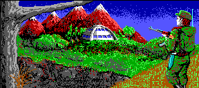

unpackcpa
With the unpackcpa program you can unpack a Wasteland Compressed Picture animation (CPA) file into a directory.
The first parameter must be the name of the directory in which the animation should be unpacked. The program creates the directory automatically if it does not yet exist.
The second parameter specifies the filename of the CPA file to read. If the parameter is missing or is "-" then the input is read from stdin.
A CPA file does not contain any information about picture dimensions. So if the size of the CPA file is not the default 288x128 pixels then you have to use the width parameter to give unpackcpa a clue about the real size of the picture. The height is calculated automatically.
Usage
unpackcpa [OPTION]... DIRECTORY [INPUT]
Parameters
-W, --width The width of the picture (Default: 288) -d, --debug Shows stacktrace when an error occurs -h, --help Display help and exit -V, --version Display version and exit
Example
The following command unpacks Wasteland's end.cpa into the directory c:\tmp\end:
unpackcpa c:\wland\end.cpa c:\tmp\end
The result is a directory containing 16 4-bit color PNGs and an animation.txt which contains the delay values between the frames. The first PNG (000.png) is the base frame as shown below. The other 15 PNGs are the animation frames.
